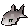
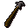
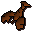
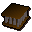
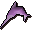

Fishing spot
| Config name | 0_45_49_rarefish |
| NPC id | 324 |
| Combat level | hidden |
| Options | Cage, Harpoon |
| Category | rarefish |
| Wander range | does not move |
| Movement | nomove |
| Defined in | scripts/skill_fishing/configs/fishing.npc |
Fishing spot
I can see fish swimming in the water.
Show all 3 spawns on the world map → Open in knowledge graph →
Locations
| Area | Coordinates | Level | Count | Map |
|---|---|---|---|---|
| Rimmington | 2923, 3180 | 0 | 1 | view |
| Rimmington | 2925, 3181 | 0 | 1 | view |
| Rimmington | 2926, 3179 | 0 | 1 | view |
Fishing
| Fish | Level | Tool | Bait | XP |
|---|---|---|---|---|
 Raw tuna | 35 |  Harpoon | 80.0 | |
 Raw lobster | 40 |  Lobster pot | 90.0 | |
 Raw swordfish | 50 | Harpoon | 100.0 |
Dialogue
You need at least 40 Fishing to catch Lobsters.
You can't carry any more lobsters.
You need at least 35 Fishing to harpoon these fish.
You can't carry any more fish.